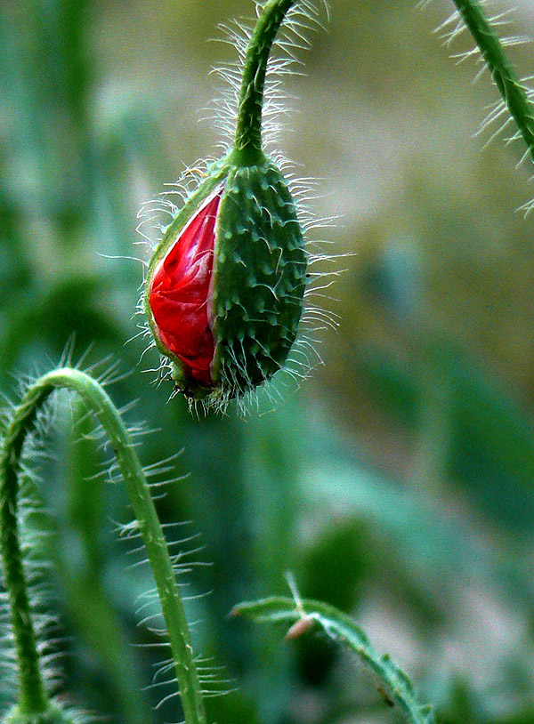
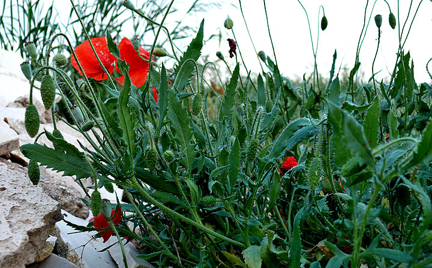
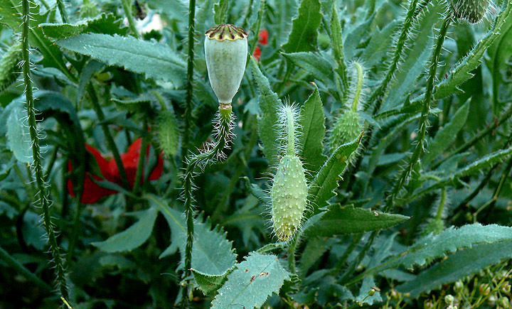
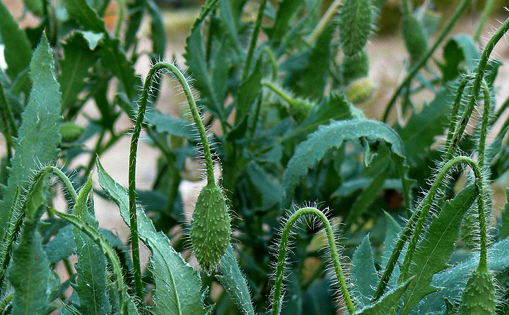
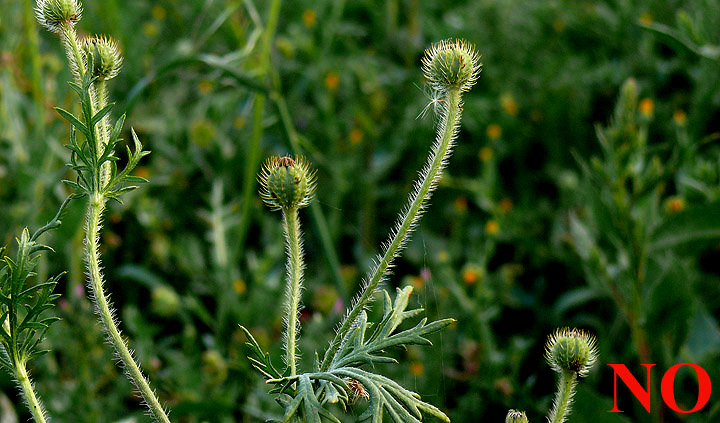
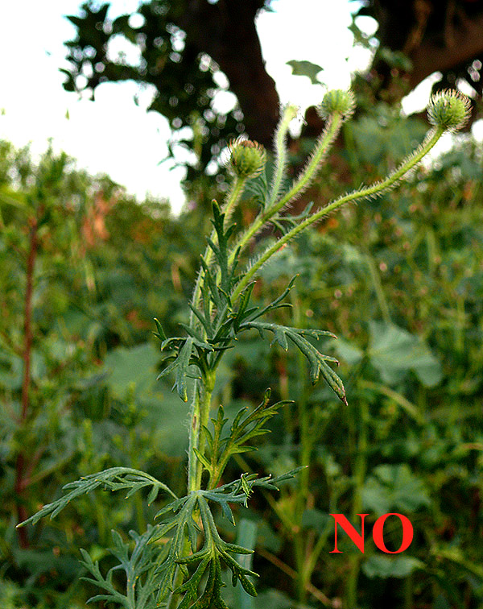

|


|
|
Papaver rhoeas:
Ababoles

|
He incluído esta especie concreta de
amapola en la lista porque se la encuentra naturalmente en casi todo
el Mediterráneo, la he visto personalmente en abundancia en zonas
donde habita Testudo graeca y porque otras tortugas del
género Testudo la consumen con avidez en cautividad, con lo
que cabe de esperar que también lo hagan en libertad. También es
mencionada como alimento de Testudo hermanni en Soler Massana & Martínez Silvetre, (2005);
y en Minch (2002). Hay datos por otro lado, sobre el consumo plantas
del mismo género en grandes cantidades por parte de Agrionemys
horsfieldi (Lagarde et al., 2003).
Mis animales (Testudo graeca) la
llevan consumiendo de forma habitual, pero en cantidades moderadas,
desde hace 16 años sin ningún tipo de problema aparente. No me
atrevería sin embargo, a recomendarla como alimento para otro tipo
de tortugas fuera del ámbito Mediterráneo; no porque tenga certeza
de que sea perjudicial, sino porque tampoco la tengo de que no lo
sea, teniendo en cuenta que es una planta con cierto grado de
toxicidad (alkaloides).
Por otro lado, os muestro fotos de otra
planta del mismo género que es rechazada rotundamente por mis
animales, Papaver hybridum.
|
Fotos
Papaver rhoeas

Papaver rhoeas

Papaver rhoeas

Papaver rhoeas
Papaver rhoeas

Papaver rhoeas
Papaver rhoeas

Papaver hybridum
Papaver hybridum

Papaver hybridum
Fotos Marcos Martínez.
|
REFERENCIAS
Minch, M. (2002)
schildifutter.com.
Lagarde, F., Bonnet, X., Corbin, J.,
Henen, B., Nagy, K., Mardonov, B. and Naulleau, G. (2003).
Foraging behaviour and diet of an ectothermic herbivore: Testudo
horsfieldi. Ecography 26:236-242.
Soler Massana J. y Martínez Silvestre A. (2005). La Tortuga Mediterrànea a Catalunya. 78. Ediciones L’Aguila de Cultura Popular,
Col-lecciò Natura, 3, Tarragona.
Testudomaniac (2001-2004).
L’alimentation des tortues terrestres.
www.testudomaniac.net.
|
|
|